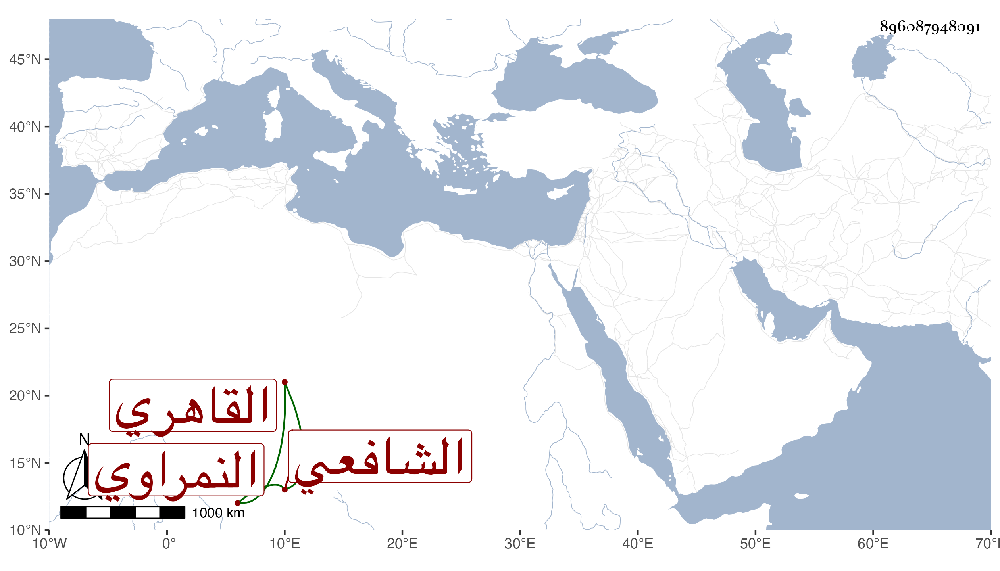

0902Sakhawi.DawLamic.ITO20230111-ara1.EIS1600.896087948091
Biography ID: 896087948091
381
محمد بن علي بن أحمد بن أبي بكر بن سيف الدين بن جمال الدين عبد الله ابن الشيخ فضل الله النمراوي الأصل القاهري الشافعي الماضي أبوه ويعرف بالسعودي وابن السعودي ورأيت في مكان آخر بخطي اسم جده أحمد بن فضل بن أبي بكر بن عبد الله . نشأ بدون تصون وخالط السفهاء بدون تدبر واختص ببني عليبة ثم بابن عواض ، وتكسب في سوق أمير الجيوش وغيره وتطور وفجر مع مزيد عاميته ولم يحصل لأحد منهم راحة ، ولازمني قليلا في سماع البخاري وغيره وتولع بالنظم فلم يجد وكان يتمرن فيه بمن هو قريب منه من العوام ونحوهم ورأيته فيمن قرض مجموع البدري في سنة أربع وسبعين فكان من قوله فيه :
| أشبه أهل الشعر في العصر كلهم | نجوما بفلك الأفق في ليلها تسري |
| فما عن قليل لاح بدر به خفوا | وذلك عجز عن مقابلة البدر |
